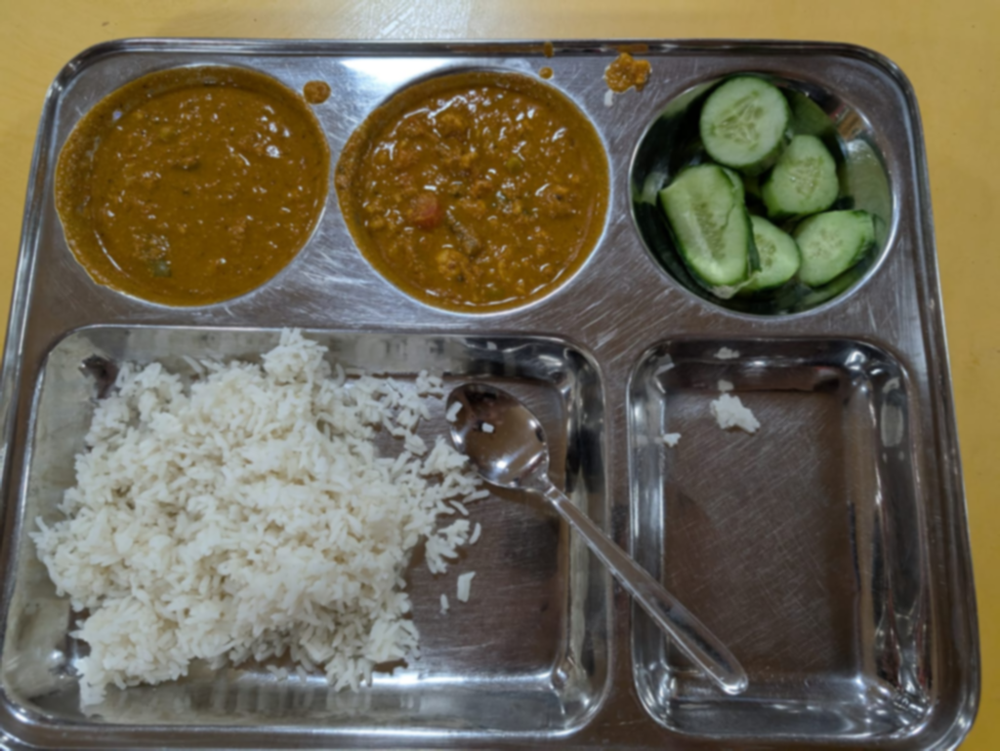
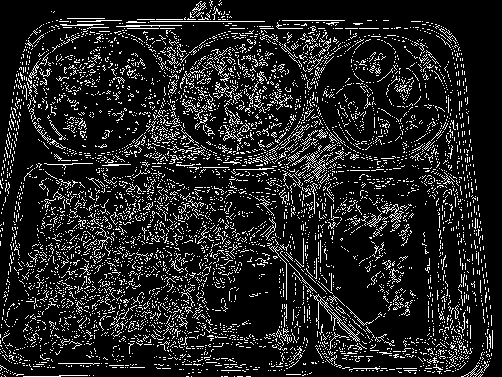
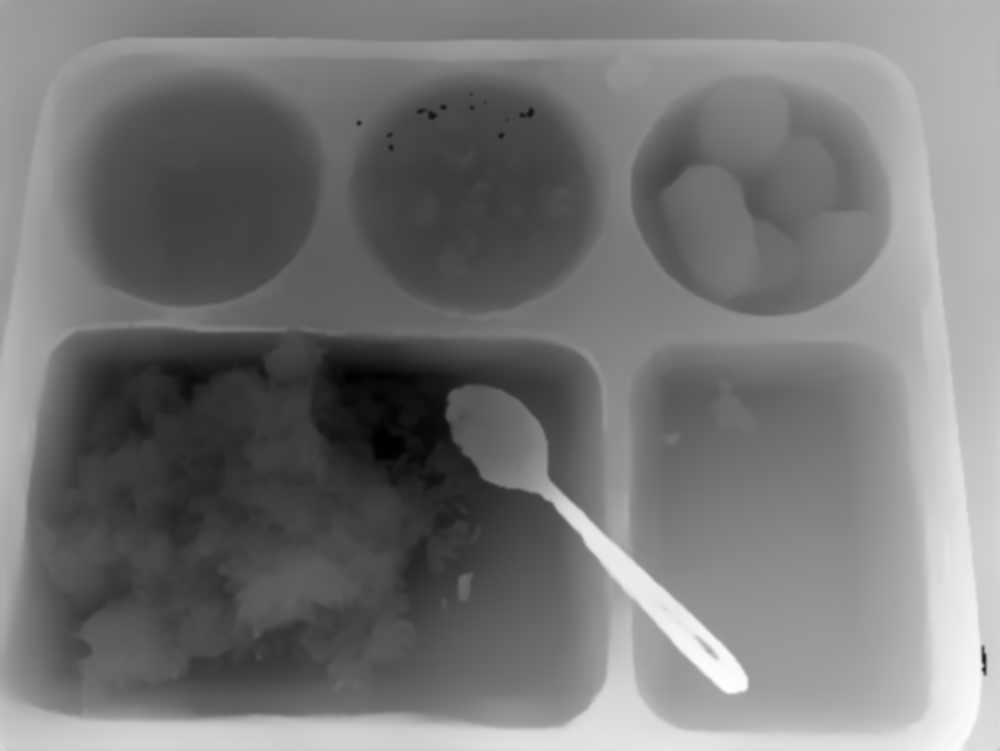
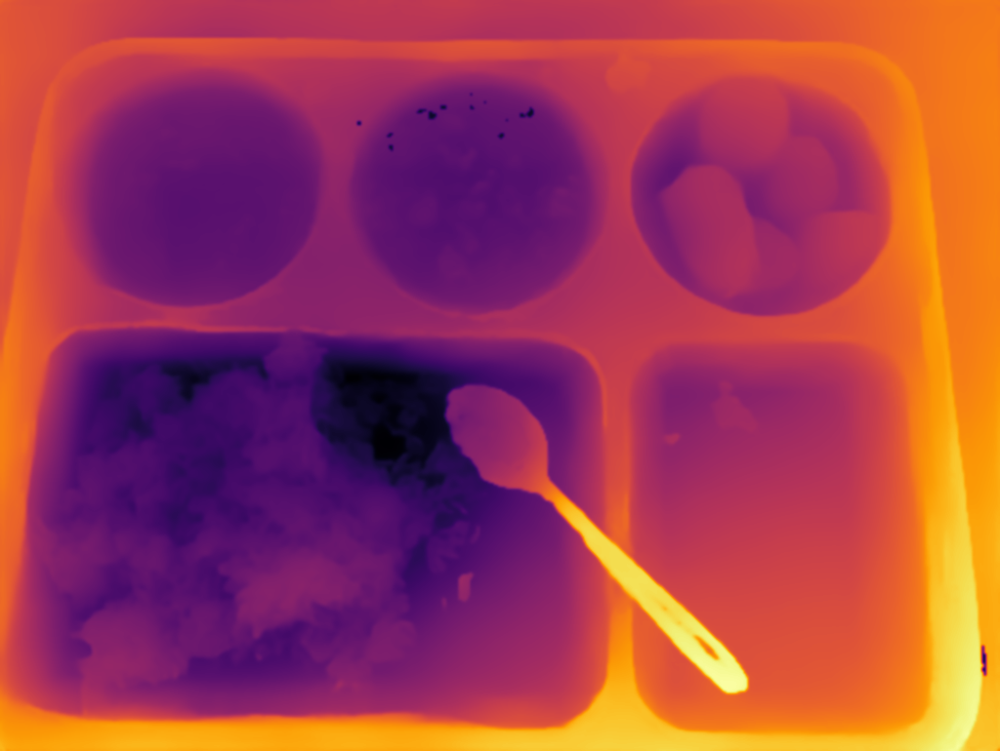
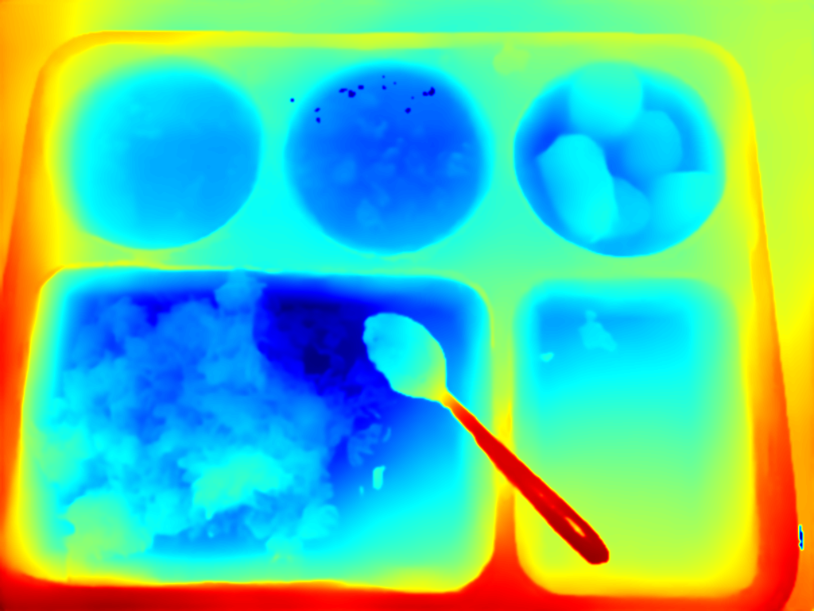
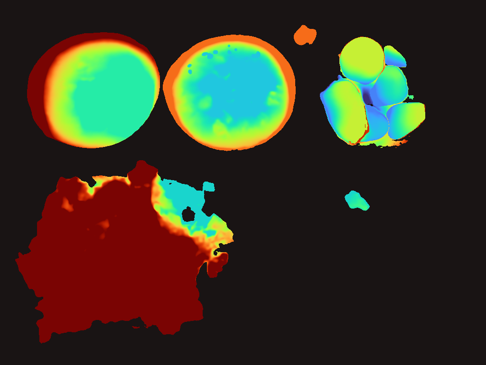
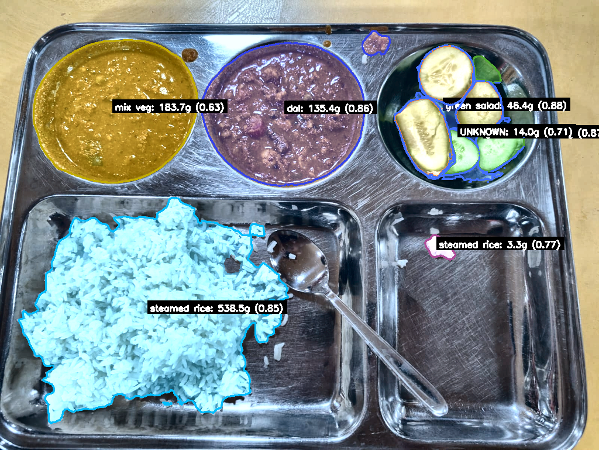

{
"resolution": "1600x1204",
"channels": 3,
"dtype": "uint8",
"expected_items": [
"chapati",
"green salad",
"mix veg",
"steamed rice",
"cake",
"chutney",
"dal"
],
"plate_profile": "mess_tray_5comp",
"debug": true
}









[]
{
"item_id": "green salad_1",
"area_pixels": 21300,
"estimated_height_cm": 2.487,
"volume_estimate_ml": 77.4,
"density": 0.6,
"mass_g": 46.4,
"class_label": "green salad",
"class_confidence": 0.9174,
"depth_stability": 1.0,
"scale_confidence": 0.7,
"composite_confidence": 0.8761,
"prior_applied": true,
"diagnostics": {
"original_sam3_query": "cucumber",
"candidate_labels": [
"cucumber"
],
"menu_matching_result": "green salad",
"final_food_label": "green salad",
"confidence": 0.9174,
"uncertainty": 0.0826,
"original_mask_id": "mask_00",
"grouped_instance_id": "inst_0",
"fragment_count": 3,
"decision_reason": "FRAGMENT_GROUPED_3_PIECES"
},
"fragment_count": 1
}{
"item_id": "green salad_2",
"area_pixels": 8966,
"estimated_height_cm": 1.898,
"volume_estimate_ml": 22.5,
"density": 0.6,
"mass_g": 13.5,
"class_label": "green salad",
"class_confidence": 0.9135,
"depth_stability": 1.0,
"scale_confidence": 0.7,
"composite_confidence": 0.8742,
"prior_applied": true,
"diagnostics": {
"original_sam3_query": "sliced cucumber",
"candidate_labels": [
"sliced cucumber"
],
"menu_matching_result": "green salad",
"final_food_label": "green salad",
"confidence": 0.9135,
"uncertainty": 0.0865,
"original_mask_id": "mask_01",
"grouped_instance_id": "inst_1",
"fragment_count": 3,
"decision_reason": "FRAGMENT_GROUPED_3_PIECES"
},
"fragment_count": 1
}{
"item_id": "dal_3",
"area_pixels": 54666,
"estimated_height_cm": 2.635,
"volume_estimate_ml": 125.2,
"density": 1.082,
"mass_g": 135.4,
"class_label": "dal",
"class_confidence": 0.8794,
"depth_stability": 1.0,
"scale_confidence": 0.7,
"composite_confidence": 0.8578,
"prior_applied": true,
"diagnostics": {
"original_sam3_query": "dal tadka",
"candidate_labels": [
"dal tadka"
],
"menu_matching_result": "dal",
"final_food_label": "dal",
"confidence": 0.8794,
"uncertainty": 0.1206,
"original_mask_id": "mask_02",
"grouped_instance_id": "inst_2",
"fragment_count": 2,
"decision_reason": "FRAGMENT_GROUPED_2_PIECES"
},
"fragment_count": 1
}{
"item_id": "steamed rice_4",
"area_pixels": 115896,
"estimated_height_cm": 5.214,
"volume_estimate_ml": 500,
"density": 1.077,
"mass_g": 538.5,
"class_label": "steamed rice",
"class_confidence": 0.8549,
"depth_stability": 1.0,
"scale_confidence": 0.7,
"composite_confidence": 0.8457,
"prior_applied": true,
"diagnostics": {
"original_sam3_query": "rice",
"candidate_labels": [
"rice"
],
"menu_matching_result": "steamed rice",
"final_food_label": "steamed rice",
"confidence": 0.8549,
"uncertainty": 0.1451,
"original_mask_id": "mask_03",
"grouped_instance_id": "inst_3",
"fragment_count": 1,
"decision_reason": "SINGLE_INSTANCE"
},
"fragment_count": 1
}{
"item_id": "steamed rice_5",
"area_pixels": 1345,
"estimated_height_cm": 1.929,
"volume_estimate_ml": 3.2,
"density": 1.03,
"mass_g": 3.3,
"class_label": "steamed rice",
"class_confidence": 0.7034,
"depth_stability": 1.0,
"scale_confidence": 0.7,
"composite_confidence": 0.7671,
"prior_applied": true,
"diagnostics": {
"original_sam3_query": "white rice",
"candidate_labels": [
"white rice"
],
"menu_matching_result": "steamed rice",
"final_food_label": "steamed rice",
"confidence": 0.7034,
"uncertainty": 0.2966,
"original_mask_id": "mask_04",
"grouped_instance_id": "inst_4",
"fragment_count": 1,
"decision_reason": "SINGLE_INSTANCE"
},
"fragment_count": 1
}{
"item_id": "mix veg_6",
"area_pixels": 54175,
"estimated_height_cm": 3.162,
"volume_estimate_ml": 204.1,
"density": 0.9,
"mass_g": 183.7,
"class_label": "mix veg",
"class_confidence": 0.4696,
"depth_stability": 1.0,
"scale_confidence": 0.7,
"composite_confidence": 0.6268,
"prior_applied": true,
"diagnostics": {
"original_sam3_query": "vegetable curry",
"candidate_labels": [
"vegetable curry"
],
"menu_matching_result": "mix veg",
"final_food_label": "mix veg",
"confidence": 0.4696,
"uncertainty": 0.5304,
"original_mask_id": "mask_05",
"grouped_instance_id": "inst_5",
"fragment_count": 1,
"decision_reason": "SINGLE_INSTANCE"
},
"fragment_count": 1
}{
"item_id": "UNKNOWN_7",
"area_pixels": 4458,
"estimated_height_cm": 2.635,
"volume_estimate_ml": 14.0,
"density": 1.0,
"mass_g": 14.0,
"class_label": "UNKNOWN",
"class_confidence": 0.6921,
"depth_stability": 0.75,
"scale_confidence": 0.7,
"composite_confidence": 0.7081,
"prior_applied": false,
"diagnostics": {
"original_sam3_query": "food",
"candidate_labels": [
"food"
],
"menu_matching_result": null,
"final_food_label": "UNKNOWN",
"confidence": 0.6921,
"uncertainty": 0.3079,
"original_mask_id": "mask_06",
"grouped_instance_id": "inst_6",
"fragment_count": 1,
"decision_reason": "ABSTAINED_INSUFFICIENT_EVIDENCE"
},
"fragment_count": 1
}

{
"food_items": [
{
"name": "green salad",
"volume_ml": 99.9,
"mass_g": 59.9,
"calories": 18.0,
"protein": 0.8,
"carbs": 2.8,
"fat": 0.4,
"confidence": 0.8761,
"class_label": "green salad",
"class_confidence": 0.9174,
"top_k": [
{
"label": "green salad",
"confidence": 0.9174,
"raw_similarity": 0.9174
}
],
"identification_status": "recognized",
"menu_match": true,
"matched_menu_item": "green salad",
"identification_confidence": 0.9174,
"segmentation_confidence": 0.9174,
"association_confidence": 1.0,
"menu_match_confidence": 1.0,
"depth_confidence": 1.0,
"scale_confidence": 0.7,
"diagnostics": {
"original_sam3_query": "cucumber",
"candidate_labels": [
"cucumber"
],
"menu_matching_result": "green salad",
"final_food_label": "green salad",
"confidence": 0.9174,
"uncertainty": 0.0826,
"original_mask_id": "mask_00",
"grouped_instance_id": "inst_0",
"fragment_count": 3,
"decision_reason": "FRAGMENT_GROUPED_3_PIECES"
},
"fragment_count": 1,
"food_name": "green salad",
"instance_count": 2
},
{
"name": "dal",
"volume_ml": 125.2,
"mass_g": 135.4,
"calories": 180.6,
"protein": 9.9,
"carbs": 27.1,
"fat": 3.6,
"confidence": 0.8578,
"class_label": "dal",
"class_confidence": 0.8794,
"top_k": [
{
"label": "dal",
"confidence": 0.8794,
"raw_similarity": 0.8794
}
],
"identification_status": "recognized",
"menu_match": true,
"matched_menu_item": "dal",
"identification_confidence": 0.8794,
"segmentation_confidence": 0.8794,
"association_confidence": 1.0,
"menu_match_confidence": 1.0,
"depth_confidence": 1.0,
"[
{
"step": "Input",
"message": "Original image saved",
"params": {
"resolution": "1600x1204"
},
"elapsed_s": 0.1897,
"input_file": null,
"output_file": "original.png",
"timestamp": "2026-11-12T13:32:59.205058"
},
{
"step": "Pipeline",
"message": "Step 1 — Preprocessing & Perspective Warp",
"params": {},
"elapsed_s": null,
"input_file": null,
"output_file": null,
"timestamp": "2026-11-12T13:32:59.206169"
},
{
"step": "Quality Gate",
"message": "PASS",
"params": {
"blur_score": 351.14,
"tilt_deg": 25.0
},
"elapsed_s": null,
"input_file": null,
"output_file": null,
"timestamp": "2026-11-12T13:32:59.408061"
},
{
"step": "Preprocessing",
"message": "Resize applied",
"params": {
"original": "1600x1204",
"target_long_edge": 1024,
"scale": 0.64
},
"elapsed_s": 0.0027,
"input_file": null,
"output_file": "01_resized.png",
"timestamp": "2026-11-12T13:32:59.528459"
},
{
"step": "Preprocessing",
"message": "Gaussian blur applied",
"params": {
"kernel": 5
},
"elapsed_s": 0.0087,
"input_file": null,
"output_file": "02_denoised.png",
"timestamp": "2026-11-12T13:32:59.637539"
},
{
"step": "Preprocessing",
"message": "LAB color normalization applied",
"params": {},
"elapsed_s": 0.0515,
"input_file": null,
"output_file": "03_color_normalized.png",
"timestamp": "2026-11-12T13:32:59.769779"
},
{
"step": "Preprocessing",
"message": "CLAHE contrast enhancement applied",
"params": {
"clip_limit": 2.0,
"tile_grid": "8x8"
},
"elapsed_s": 0.0141,
"input_file": null,
"output_file": "04_contrast_enhanced.png",
"timestamp": "2026-11-12T13:32:59.875535"
},
{
"step": "Preprocessing",
"message": "Canny edge detection",
"params": {
"low": 50,
"high": 150
},
"elapsed_s": | Step | Message | Params | Time |
|---|---|---|---|
| Input | Original image saved | {"resolution": "1600x1204"} | 0.1897s |
| Pipeline | Step 1 — Preprocessing & Perspective Warp | — | — |
| Quality Gate | PASS | {"blur_score": 351.14, "tilt_deg": 25.0} | — |
| Preprocessing | Resize applied | {"original": "1600x1204", "target_long_edge": 1024, "scale": 0.64} | 0.0027s |
| Preprocessing | Gaussian blur applied | {"kernel": 5} | 0.0087s |
| Preprocessing | LAB color normalization applied | — | 0.0515s |
| Preprocessing | CLAHE contrast enhancement applied | {"clip_limit": 2.0, "tile_grid": "8x8"} | 0.0141s |
| Preprocessing | Canny edge detection | {"low": 50, "high": 150} | 0.0400s |
| Preprocessing | Warp skipped (no 4-pt contour) | {"warped": false} | — |
| Preprocessing | Complete | {"output_size": "1024x770"} | 0.8290s |
| Pipeline | Step 2 — Compartments & Scale | — | — |
| Compartment Detection | Detected 0 compartments | {"min_area_frac": 0.02, "max_area_frac": 0.9, "compartment_count": 0} | 0.0410s |
| Scale Calibration | Fallback to bbox-based calibration | {"cm_per_pixel": 0.03812, "method": "bbox"} | — |
| Compartment Detection | Scale computed | {"cm_per_pixel": 0.03812, "pixel_area_cm2": 0.00145309, "compartments": 0, "scale_confidence": 0.7} | 0.1800s |
| Pipeline | Step 3 — Depth Estimation | — | — |
| Depth Estimation | Depth Anything depth map computed (smoothed) | {"device": "cuda", "is_metric": true, "shape": [770, 1024], "min": -90.211, "max": -47.537} | 1.2236s |
| Depth Normalization | Surface normal plane subtracted from depth | {"baseline": -71.22, "fitted_plane": true, "is_metric": true} | 0.1137s |
| Depth Metric [cm] | Metric depth height in cm directly computed | {"cm_per_pixel": 0.03812, "min_cm": 0.0, "max_cm": 15.0, "mean_cm": 3.16} | 0.0032s |
| Depth Estimation | Complete | — | 1.5226s |
| Pipeline | Step 4–6 — SAM 3 Food Identification & Segmentation | — | — |
| SAM3 | Identified 7 food items (6 recognized, 0 unlisted, 0 uncertain) | — | 39.4582s |
| Pipeline | Step 7 — Volume & Mass Estimation | — | — |
| Volume Estimation | Computed mass for 7 items | {"total_items": 7} | 0.0399s |
| Pipeline | ✅ Pipeline complete | {"total_food_items": 7, "avg_confidence": 0.7937, "scale_method": "bbox"} | 42.4177s |